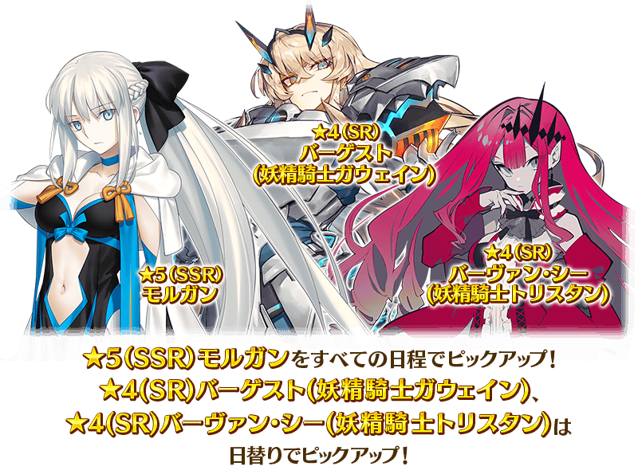
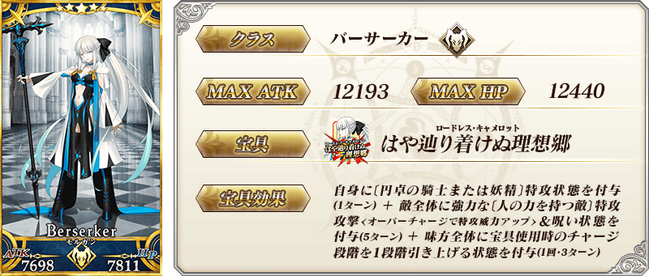
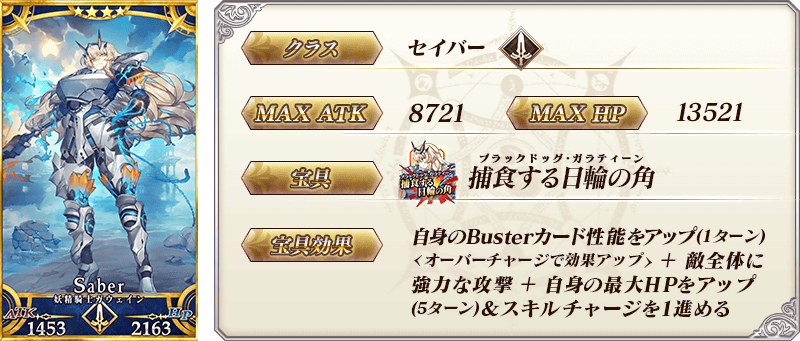
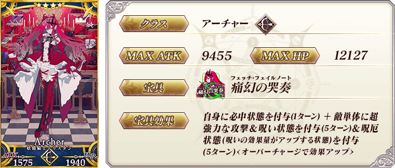
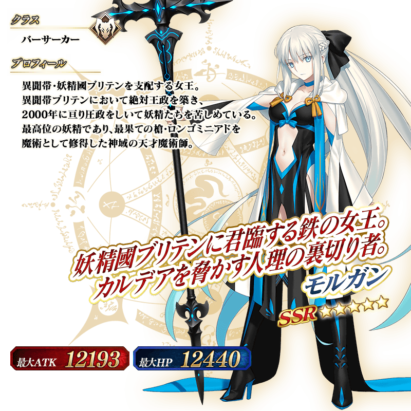

◆「第2部 第6章完結記念Pick Up2召喚(每日交替)」期間◆
期間:2021年8月18日(三) 17:00～9月1日(三) 11:59
為了記念第2部 第6章「Lostbelt No.6 妖精圓卓領域 阿瓦隆・勒菲 星辰誕生之刻」的完結，3位從者Pick Up！ ※就算未滿足主線關卡開放條件的狀態也能進行本召喚。

▼期間限定從者
【常駐Pick Up】
・★5(SSR)摩根
▼故事召喚從者
【每日交替Pick Up】
・★4(SR)巴格斯特(妖精騎士高文)
・★4(SR)芭班・希(妖精騎士崔斯坦)
Pick Up期間中，Pick Up對象從者的出現機率提升！
詳情請在聖晶石召喚畫面左下的召喚詳細確認。
11次召喚中確定1張★4(SR)以上和確定1位★3(R)以上的從者！ ※確定★4(SR)以上包含從者和概念禮裝。
■關於1天1次限定的有償聖晶石召喚
自2021年8月1日(日) 18:00，變得可以1天1次限定於期間限定召喚用有償聖晶石1個進行「1回召喚」。
※透過有償聖晶石1個的「1次召喚」，每天3:00重置。
※透過有償聖晶石1個的「1次召喚」對應的聖晶石召喚有好幾個的情況，各個召喚中1天各進行1次有償聖晶石1個的「1次召喚」。
※請注意就算進行透過有償聖晶石1個的「1次召喚」，不包含在1次獎勵的計算。
※如「福袋召喚」只能「11次召喚」的期間限定召喚中無法進行用有償聖晶石1個的「1次召喚」。
※「故事召喚」中無法進行用有償聖晶石1個的「1次召喚」。
※聖晶石購入時賦予的「附贈(オマケ)」是做為無償聖晶石而不包含在有償聖晶石的個數，請注意別搞錯。另外，持有聖晶石的細項，可從持有道具一覧確認。
■關於透過召喚獲得從者硬幣
自2021年8月1日(日) 18:00，在期間限定召喚、故事召喚、友情點數召喚中入手從者時，變得可獲得該從者的從者硬幣。
※透過期間限定活動和Main Interlude、於達文西工房的「稀有稜鏡交換」關卡開放權所開放的關卡報酬而加入的限定從者，無法獲得從者硬幣。 ※關於活動限定從者的從者硬幣，今後預定會實裝別的獲得方法。 ※透過無記名靈基和宣傳活動交換從者讓從者加入的情況也可獲得從者硬幣。
◆有關從者的注意◆
※請注意本召喚做為每日交替，下述的從者就算舉辦期間中也有不會被抽出來的日子。
・★4(SR)巴格斯特(妖精騎士高文)
・★4(SR)芭班・希(妖精騎士崔斯坦)
※本召喚的Pick Up期間中，透過故事進行所追加的下述的從者就算通過各章前也能入手。
・★4(SR)巴格斯特(妖精騎士高文)
・★4(SR)芭班・希(妖精騎士崔斯坦)
※下述的從者在Pick Up期間結束後不會追加到故事召喚。
・★5(SSR)摩根
※下述的從者在Pick Up期間結束後仍會在故事召喚被抽出。
・★4(SR)巴格斯特(妖精騎士高文)
・★4(SR)芭班・希(妖精騎士崔斯坦)
※「★4(SR)巴格斯特(妖精騎士高文)」「★4(SR)芭班・希(妖精騎士崔斯坦)」的靈基再臨第3階段包含「Lostbelt No.6 妖精圓卓領域 阿瓦隆・勒菲 星辰誕生之刻」的劇透。敬請注意。
◆有關從者真名的注意◆
※「★4(SR)巴格斯特(妖精騎士高文)」是「妖精騎士高文」靈基再臨到第2階段的話名稱會變成「巴格斯特」。
※「★4(SR)芭班・希(妖精騎士崔斯坦)」是「妖精騎士崔斯坦」靈基再臨到第2階段的話名稱會變成「芭班・希」。
◆「第2部 第6章完結記念Pick Up2召喚(每日交替)」Pick Up內容◆
| Pick Up期間 | Pick Up內容 | |||
|---|---|---|---|---|
| 全天Pick Up | 每日交替Pick Up | |||
|
8/18(三) 17:00～ 8/19(四) 22:59 |
期間限定從者 ★5 摩根 |
故事召喚從者
★4 巴格斯特(妖精騎士高文)
|
||
|
故事召喚從者
★4 芭班・希(妖精騎士崔斯坦)
|
||||
|
8/19(四) 23:00～ 8/21(六) 22:59 |
故事召喚從者
★4 芭班・希(妖精騎士崔斯坦)
|
|||
|
8/21(六) 23:00～ 8/23(一) 22:59 |
故事召喚從者
★4 巴格斯特(妖精騎士高文)
|
|||
|
8/23(一) 23:00～ 8/29(日) 22:59 |
故事召喚從者
★4 巴格斯特(妖精騎士高文)
|
|||
|
故事召喚從者
★4 芭班・希(妖精騎士崔斯坦)
|
||||
| 8/29(日) 23:00～8/30(一) 22:59 |
故事召喚從者
★4 芭班・希(妖精騎士崔斯坦)
|
|||
| 8/30(一) 23:00～8/31(二) 22:59 |
故事召喚從者
★4 巴格斯特(妖精騎士高文)
|
|||
| 8/31(二) 23:00～9/1(三) 11:59 |
故事召喚從者
★4 巴格斯特(妖精騎士高文)
|
|||
|
故事召喚從者
★4 芭班・希(妖精騎士崔斯坦)
|
||||
※「★4(SR)巴格斯特(妖精騎士高文)」是「妖精騎士高文」靈基再臨到第2階段的話名稱會變成「巴格斯特」。 ※「★4(SR)芭班・希(妖精騎士崔斯坦)」是「妖精騎士崔斯坦」靈基再臨到第2階段的話名稱會變成「芭班・希」。 ※請注意會以每日交替變更Pick Up的從者。
 ※上述「★5(SSR)摩根」的卡面為靈基再臨第1階段。
 ※「★4(SR)巴格斯特(妖精騎士高文)」是「妖精騎士高文」靈基再臨到第2階段的話名稱會變成「巴格斯特」。 ※「★4(SR)巴格斯特(妖精騎士高文)」的靈基再臨第3階段包含「Lostbelt No.6 妖精圓卓領域 阿瓦隆・勒菲 星辰誕生之刻」的劇透。敬請注意。
 ※「★4(SR)芭班・希(妖精騎士崔斯坦)」是「妖精騎士崔斯坦」靈基再臨到第2階段的話名稱會變成「芭班・希」。 ※「★4(SR)芭班・希(妖精騎士崔斯坦)」的靈基再臨第3階段包含「Lostbelt No.6 妖精圓卓領域 阿瓦隆・勒菲 星辰誕生之刻」的劇透。敬請注意。
 ※上述「★5(SSR)摩根」的立繪為靈基再臨第1階段。
介紹在本召喚Pick Up的3位從者寶具演出！
3位Pick Up從者的寶具演出於一部份裝置有對應全螢幕顯示。
※「★5(SSR)摩根」在通過第2部 第6章「Lostbelt No.6 妖精圓卓領域 阿瓦隆・勒菲 星辰誕生之刻」的特定主線關卡後，會變化寶具演出時的BGM。
【★5(SSR)摩根】
【★4(SR)巴格斯特(妖精騎士高文)】
【★4(SR)芭班・希(妖精騎士崔斯坦)】
其他還有，
・「Lostbelt No.6 妖精圓卓領域 阿瓦隆・勒菲 星辰誕生之刻」完結記念宣傳活動
・第2部 第6章完結記念Pick Up召喚(每日交替)
以期間限定舉辦中！
關於詳情，請自下述橫幅確認。
■「Lostbelt No.6 妖精圓卓領域 阿瓦隆・勒菲 星辰誕生之刻」完結記念宣傳活動詳細情報

■「第2部 第6章完結記念Pick Up召喚(每日交替)」詳細情報